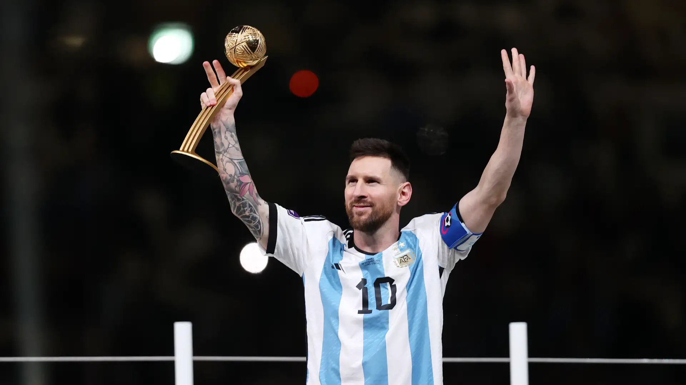
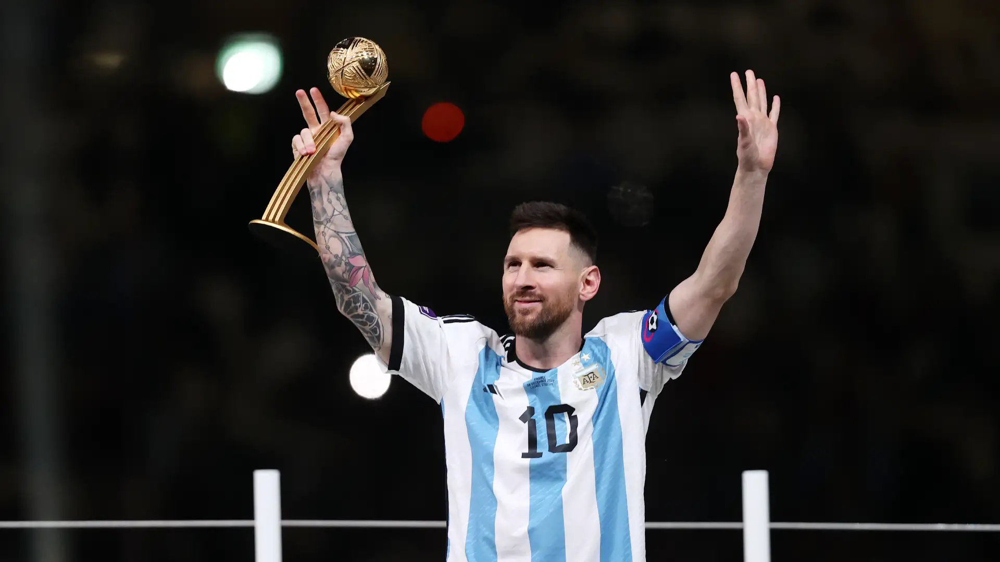
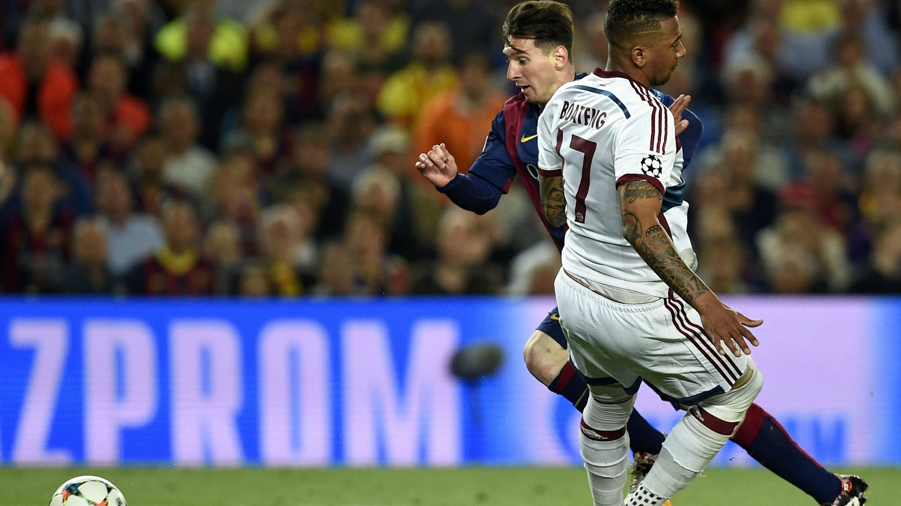
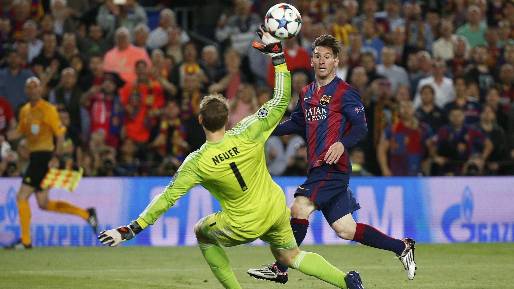

" Muchas veces soñaba con ganar algo con la selección. Al final, terminé ganando todo. No le puedo pedir más a mi carrera. "
 

" Me preocupa más ser buena persona que ser el mejor jugador del mundo. "


" Mi ambición es siempre mejorar y mejorar. "